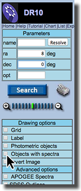
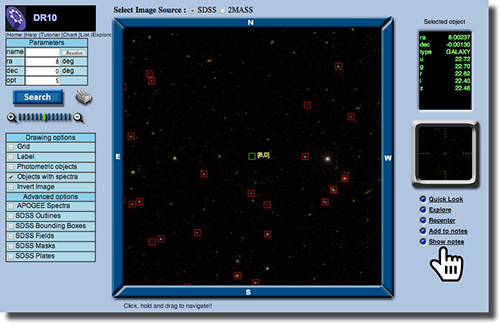
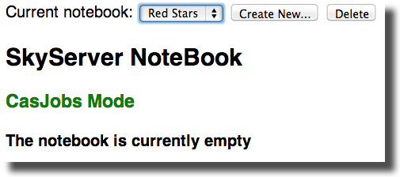

Stellar Spectra - Blackbodies or Not?
Required: Preflight Training - Spectrum Graphs
Required: Experience with Blackbody Radiation Curves
Recommended: Launch Milky Way - Comparing Curves
Every time a new technology is invented to investigate stars or an existing technology is refined, the door is open to uncover new patterns and explain observed phenomena. In this Launch activity we put together information that physicists know about stars with knowledge of the behavior of blackbodies. the light objects emit when heated to ask the question, "Do stars behave in the same ways?" We begin with a review black body radiation curves.
Blackbody Basics
Here on Earth there are no substances that behave as perfect absorbers of radiation or black bodies.
The element carbon comes close, absorbing over 95 percent of the incoming radiation. The general idea is that as black bodies heat up, they re-emit radiation at a color or wavelength that is related to their temperature. Review the animation below to observe this phenomena.
By observing and studying the heating of the nail and the accompanying graphs, you should be able to make several observations about what happens to the radiation emitted from objects. Record these in the appropriate place in your journal.
Are Stars Blackbodies?
Write a Testable Hypothesis
If stars do behave as black bodies, we should be able to observe certain things: Their images and spectra should follow the same patterns as the demonstration above. Our goal in this activity is to test a hypothesis about stars as blackbodies. You have information from your experience and the demonstration on this page that allow you to create a hypothesis. It is helpful to create a statement that makes a prediction that is testable. Do this in your journal now.
For this example we start with the hypothesis:
If stars behave as blackbodies then the spectra of blue stars should peak to the left of red stars.
Identify the Data You Need
The SDSS has images and spectra for you to use in testing your hypothesis. To test the hypothesis above we need:
• A set of blue stars and their spectra
• A set of red stars and their spectra
Locate the Data
Although you could use the Science Archive Server (SAS) or create a query to retrieve images and spectra from the database, we are going to create simple collections of stars from the SkyServer Navigate and the Notebook tool. In this example we will be using data from Explore and Navigate.
Gather Data - Find a Starting Place
 The method described here for creating a collection of images requires you to log in to the SDSS Data Release 10 (DR10). Begin at SkyServer Home. Use the login information that has been provided you by your instructor or follow the instructions to register for the first time.
The method described here for creating a collection of images requires you to log in to the SDSS Data Release 10 (DR10). Begin at SkyServer Home. Use the login information that has been provided you by your instructor or follow the instructions to register for the first time.
With 500 million stars in the SDSS database, we can all start in a unique location. Use RA and Dec to define a starting place. For this example we are going to create two collections of stars using the SDSS Notebook tool that is associated with Navigate. We need the RA and Dec for a starting place within the SDSS that has spectra. We can get these coordinates from the Constellations Notebook. Use this link to first locate a constellation that lies within the SDSS footprint, record the RA and Dec and then head on over to the Navigate tool. Need Help? Click Here.
Enter the RA and Dec for your starting place into the Parameters box on the left hand side of the page. In the Drawing Options box, click Objects with spectra then click the Search button. Your location will load with the objects marks that have spectral information associated with them.


Gather Data - Create Two Collections
Use the Show notes link on the right side of the page to go to the notebook page. From here you will create two notebooks to store the stars you need for comparison.
• Select Create New . . .
• Choose a name for each of the collections you want to make - one for blue stars and a second for red
• The notebook that is currently displayed is active. Use the dropdown menu to change notebooks when you want to add objects to a different notebook.
Gather Data - Collect Objects
• Click inside the red box that surrounds a red star
• View the star in the close up window to confirm it is the color you want
• Confirm that the object you are viewing is a STAR and not a GALAX
• Click Add to notes
• Continue until you have collected 5 - 10 stars. You may need to click and drag within the main window to shift to a slightly different location in order to find enough objects.
• Go to Show notes to see your collection and to switch notebooks
• Switch notebooks and continue as described. Create a second collection of blue stars.

Analyze Your Data -
You have selected two sets of data, one containing stars that appear blue and the other, red. You now need to observe the spectra of the stars in each group to see if the spectra of the blue set generally peak to the left or the shorter wavelength end of the spectrum from the red set.
• Within your notebooks, each of the stars you saved is linked to Explore and Navigate tools. You can access spectra from either of these tools. Let's try Explore.
• From your notebook, the Explore link for your first star. Once in Explore, scroll down until you see the spectrum for that star. Click to enlarge that spectrum.

Working in Explore
From Explore you can choose to do a number of things. You could simply record a general description of the curve of the spectrum. This is a qualitative form of data collection. You my also collect quantitative data by estimating the wavelength where the believe the spectrum peaks. The Interactive Spectrum link takes you the Science Archive Server where it is easy to access measurement data from the graphs. Record the data you observe or measure in your journal.

Interpret Your Results
What patterns in your data do you see that support or do not support your hypothesis? It's as simple as that. Review your work. Have you gathered any evidence that supports or rejects the idea that stars act as blackbodies?